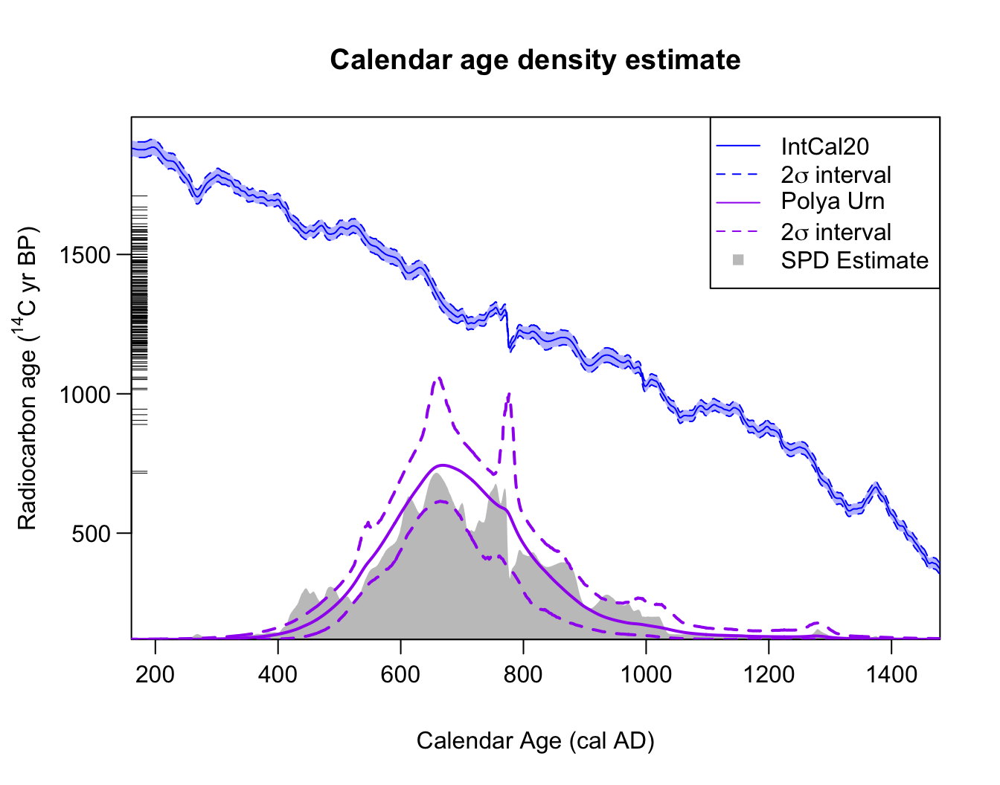

Non-Parametric Joint Density Estimation
Source:vignettes/Non-parametric-summed-density.Rmd
Non-parametric-summed-density.RmdNon-parametric calibration of multiple related 14C samples
Model details
We model the underlying shared calendar age density as an infinite and unknown mixture of individual calendar age clusters/phases: Each calendar age cluster in the mixture has a normal distribution with a different location and spread (i.e., an unknown mean and precision ). Each object is then considered to have been drawn from one of the (infinite) clusters that together constitute the overall .
Such a model allows considerable flexibility in the estimation of the joint calendar age density — not only allowing us to build simple mixtures but also approximate more complex distributions (see illustration below). In some cases, this mix of normal densities may represent true and distinct underlying normal archaeological phases, in which case additional practical inference may be possible. However this is not required for the method to provide good estimation of a wide range of underlying distributions.
The probability that a particular sample is drawn from a particular cluster will depend upon the relative weight given to that specific cluster. It will be more likely that an object will come from some clusters than others. Given an object belongs to a particular cluster, its prior calendar age will then be normally distributed with the mean and precision of that cluster.
An illustration of building up a potentially complex distribution using mixtures of normals. Left Panel: A simple mixture of three (predominantly disjoint) normal clusters (blue dashed lines) results in an overall that is tri-modal (solid red). Right Panel: Overlapping normal clusters (blue dashed lines) can however create more complex distributions (solid red).
Estimation of the shared underlying density
To estimate the shared calendar age density based upon our set of 14C observations, , we need to estimate:
- the mean and precision of each individual normal cluster within the overall mixture ,
- the weighting associated to that cluster
This requires us to also calibrate the 14C determinations to obtain their calendar ages . Since we assume that the calendar ages of each object arise from the shared density, this must be performed simultaneously to the estimation of .
We use Markov Chain Monte Carlo (MCMC) to iterate, for , between:
- Calibrate to obtain calendar age estimates given current shared estimate that each
- Update estimate of shared calendar age density (to obtain given current set of calendar ages
After running the sampler for a large number of iterations (until we are sufficiently confident that the MCMC has converged) we obtain estimates for the calendar age of each sample, and an estimate for the shared calendar age density from which they arose. These latter estimates of the shared calendar age density are called predictive estimates, i.e., they provide estimates of the calendar age of a hypothetical new sample (based on the set of samples that we have observed).
Critically, with our Bayesian non-parametric method, the number of calendar age clusters that are represented in the observed data is unknown (and is allowed to vary in each MCMC step). This flexibility is different, and offers a substantial advantage, from other methods that require the number of clusters to be known a priori. For full technical details of the models used, and explanation of the model parameters, see Heaton (2022).
Running the sampler
The MCMC updating is performed within an overall Gibbs MCMC scheme. There are two different schemes provided to update the DPMM — a Polya Urn approach (Neal 2000) which integrates out the mixing weights of each cluster; and a slice sampling approach in which they are explicitly retained (Walker 2007).
Run using the Polya Urn method (our recommended approach based upon testing):
polya_urn_output <- PolyaUrnBivarDirichlet(
rc_determinations = kerr$c14_age,
rc_sigmas = kerr$c14_sig,
calibration_curve = intcal20,
n_iter = 1e5,
n_thin = 5)or the Walker method as follows:
walker_output <- WalkerBivarDirichlet(
rc_determinations = kerr$c14_age,
rc_sigmas = kerr$c14_sig,
calibration_curve = intcal20,
n_iter = 1e5,
n_thin = 5)Note: This example runs the MCMC for our default choice of 100,000 iterations. However, as we discuss below, for this challenging dataset we need a greater number of iterations to be confident of convergence. We always suggest running the MCMC for at least 100,000 iterations to arrive at the converged results. However, for some complex datasets, longer runs may be required. More detail on assessing convergence of the MCMC can be found in the determining convergence vignette
Both of these methods will output a list containing the sampler outputs at every iteration, with the values of the model parameters and the calendar ages.
Post-processing
Our sampler provides three outputs of particular interest.
Density Estimate to Summarise Objects
The output data contains information to allow calculation of the
predictive distribution for the calendar age of a new, as yet
undiscovered, object. This density estimate summarises the calendar ages
of all objects. It is generated using the posterior sampled values of
the DPMM component of our MCMC sampler. This calendar age density can be
calculated and plotted using
PlotPredictiveCalendarAgeDensity(). The pointwise mean of
will be plotted, together with a corresponding interval at (a
user-specified) probability level. If you assign the function to a
variable (as shown below) then the pointwise mean and corresponding
interval will also be stored and can be accessed.
The function allows calculation using multiple outputs so that their results can be compared. For example below we compare the results from the two sampler methods above.
densities <- PlotPredictiveCalendarAgeDensity(
output_data = list(polya_urn_output, walker_output),
denscale = 2.5)
# The mean (and default 2sigma intervals) are stored in densities
head(densities[[1]]) # The Polya Urn estimate
#> calendar_age_BP density_mean density_ci_lower density_ci_upper
#> 1 471 2.388155e-06 6.820028e-08 1.662975e-05
#> 2 472 2.414024e-06 6.850713e-08 1.674722e-05
#> 3 473 2.440255e-06 6.975724e-08 1.684074e-05
#> 4 474 2.466856e-06 7.089821e-08 1.690925e-05
#> 5 475 2.493833e-06 7.155962e-08 1.700700e-05
#> 6 476 2.521193e-06 7.237446e-08 1.711630e-05
head(densities[[2]]) # The Walker estimate
#> calendar_age_BP density_mean density_ci_lower density_ci_upper
#> 1 471 2.471499e-06 7.294953e-11 2.007406e-05
#> 2 472 2.488287e-06 7.431770e-11 2.007812e-05
#> 3 473 2.505414e-06 7.667058e-11 2.018940e-05
#> 4 474 2.522936e-06 7.858181e-11 2.051766e-05
#> 5 475 2.540896e-06 7.987301e-11 2.061738e-05
#> 6 476 2.559333e-06 8.491911e-11 2.079426e-05We also have the option to plot the SPD, to plot in the F14C scale, and to change the confidence intervals on the plot.
densities <- PlotPredictiveCalendarAgeDensity(
output_data = polya_urn_output,
denscale = 2.5,
show_SPD = TRUE,
interval_width = "bespoke",
bespoke_probability = 0.8,
plot_14C_age = FALSE)
head(densities[[1]])
#> calendar_age_BP density_mean density_ci_lower density_ci_upper
#> 1 471 2.417808e-06 1.828800e-07 6.463847e-06
#> 2 472 2.443581e-06 1.850626e-07 6.550466e-06
#> 3 473 2.469702e-06 1.872705e-07 6.598948e-06
#> 4 474 2.496178e-06 1.889666e-07 6.693827e-06
#> 5 475 2.523014e-06 1.904662e-07 6.738775e-06
#> 6 476 2.550217e-06 1.924577e-07 6.853425e-06Note: The fact that the two different MCMC samplers
do not provide matching probability intervals should flag to us that we
might not have reached convergence, and need to run the MCMC for longer.
Our investigations generally showed that
PolyaUrnBivarDirichlet() is better at reaching convergence,
and so we recommend its use over WalkerBivarDirichlet(). A
longer run of 1,000,000 iterations indicates that the plotted Polya Urn
output (in green) above is an accurate representation of the predictive
distribution.
Around 1176 cal yr BP, we see a substantial change between the 95% intervals for the summarised (predictive) estimate of the joint (which have a large spike) and the 80% intervals (which do not and are smooth). This is not an error, but rather highlights a benefit of the DPMM method whereby the number of clusters needed to represent the data is allowed to vary. This feature occurs because the method is unsure if the observed data support an additional (highly-concentrated) cluster located around this time period. In some iterations of the MCMC, such a cluster will be included; but for the majority of iterations, the method believes it is not required. Since the plotted 80% interval does not contain the spike, but the 95% does, it is likely that the method thinks there is a 2.5–10% chance of such a distinct and highly-concentrated cluster (as this is the proportion of the MCMC iterations containing one). If more detailed inference is needed, one could look at the actual individual MCMC iterations to estimate how likely such a highly-concentrated cluster, resulting in a sudden spike in samples, is.
Aside: The sharp jump in the IntCal20 calibration curve at 1176 cal yr BP (774 cal AD) is due to an extreme solar particle event (ESPE) also known as a Miyake Event (Miyake et al. 2012).
Posterior Calendar Age Estimates of Individual Samples
The output data also includes the calendar age estimate for each
14C sample. We can use this to determine the posterior
distribution of the calendar age for each sample. Note that the calendar
age estimates use the joint information provided by all the
14C determinations (as opposed to solely the 14C
determination of the single object that would be found using
CalibrateSingleDetermination()) on the understanding the
calendar ages of the objects are related.
You can calculate and plot this using
PlotCalendarAgeDensityIndividualSample() - for example to
calculate the posterior calendar age distribution for the 21st
14C determination:
PlotCalendarAgeDensityIndividualSample(21, polya_urn_output)
The highest posterior density range for a given probability and the
unmodelled density (i.e., the result of
CalibrateSingleDetermination()) can also be shown on the
plot by specifying this in the arguments, as shown below.
PlotCalendarAgeDensityIndividualSample(
21, polya_urn_output, show_hpd_ranges = TRUE, show_unmodelled_density = TRUE)
Number of Clusters
The output data also contains information about the cluster allocation of each sampled object, which we can use to build the probability for there being a given number of total clusters. If we believe the underlying individual clusters in the model have inherent meaning in terms of representing genuine and distinct periods of site usage, as opposed to simply providing a tool to enable a non-parametric density estimate, this information may be archaeologically useful.
PlotNumberOfClusters(output_data = polya_urn_output)
Changing the calendar age plotting scale
For those plotting functions which present calendar ages (i.e.,
PlotCalendarAgeDensityIndividualSample() and
PlotPredictiveCalendarAgeDensity()) we can change the
calendar age scale shown on the x-axis. The default is to plot on the
cal yr BP scale (as in the examples above). To instead plot in
cal AD, set plot_cal_age_scale = "AD"; while for
cal BC, set plot_cal_age_scale = "AD", e.g.,
densities <- PlotPredictiveCalendarAgeDensity(
output_data = polya_urn_output,
show_SPD = TRUE,
plot_cal_age_scale = "AD")
When not to use this Bayesian non-parametric method
The current implementation of our Bayesian non-parametric approach only supports normally-distributed clusters as the components in the overall calendar age mixture distribution . While this still allows a great deal of flexibility in the modelling, as many distributions can be well approximated by normals, there are certain distributions for which they will struggle. In particular, you cannot approximate a uniform phase well with a mixture of normal distributions.
If the underlying shared calendar age density
is close to a uniform phase, or a mixture of uniform phases, then the
current (normally-distributed cluster component) Bayesian non-parametric
method is unlikely to work optimally and provide reliable summaries. In
such cases, we advise use of PPcalibrate(). This
alternative approach is ideally suited to such situations.
The inhomogeneous Poisson process/changepoint approach taken by
PPcalibrate() implicitly assumes a shared underlying
calendar age model for
that consists precisely of an unknown mixture of uniform phases.
Implementing PPcalibrate() and plotting the posterior rate
of the Poisson process (see
vignette) will provide an estimate of that shared calendar age
density.